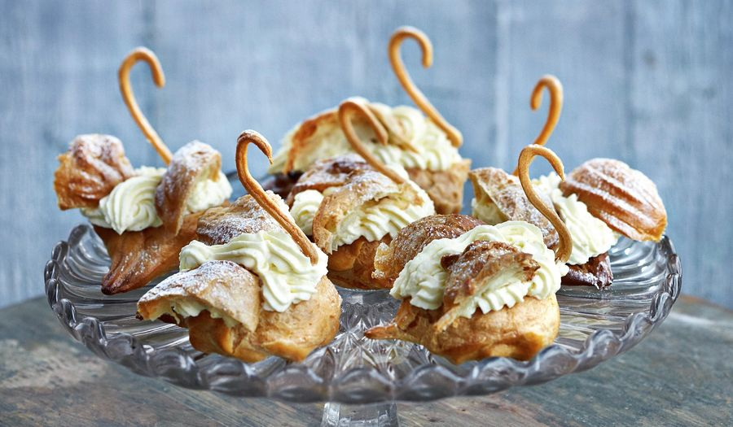

Choux Pastry
1 hour
Pastry
Makes 20-24 puffs
Choux pastry (pâte à choux) is a light, airy French pastry dough used to make an impressive array of desserts including éclairs, profiteroles, and cream puffs. The unique twice-cooked method creates steam that causes the pastry to puff dramatically in the oven, forming a hollow center perfect for filling with cream, custard, or other delicious fillings.
Ingredients
- 1 cup (250ml) water
- 1/2 cup (115g) unsalted butter
- 1 tablespoon granulated sugar
- 1/4 teaspoon salt
- 1 cup (125g) all-purpose flour, sifted
- 4 large eggs, at room temperature
- 1 egg beaten with 1 tablespoon water (for egg wash)
- Powdered sugar for dusting (optional)
Preparation
Choux pastry requires precision in technique but uses simple ingredients. The dough is first cooked on the stovetop, then eggs are incorporated to create a glossy, pipeable mixture. When baked, the high moisture content creates steam that puffs the pastry, resulting in a crisp exterior and hollow interior.
Chef's Tips
- Ensure all ingredients are measured precisely for the best results.
- The dough should be the right consistency - thick enough to hold its shape when piped but not too stiff.
- Don't open the oven door during the first 25 minutes of baking to prevent the pastry from collapsing.
- Pierce each pastry with a small hole after baking to allow steam to escape and prevent sogginess.